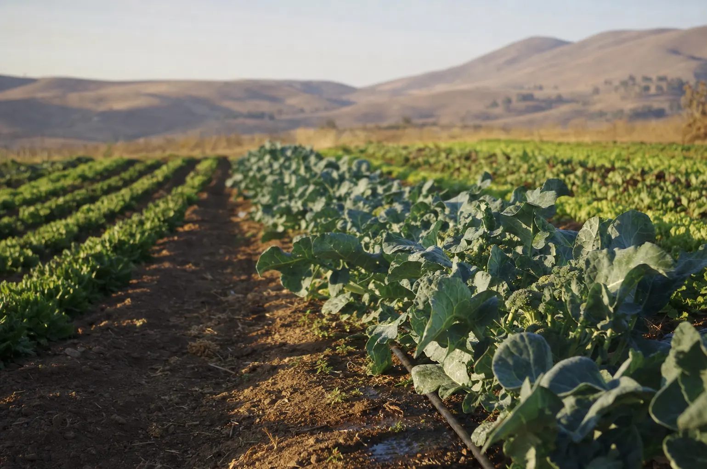
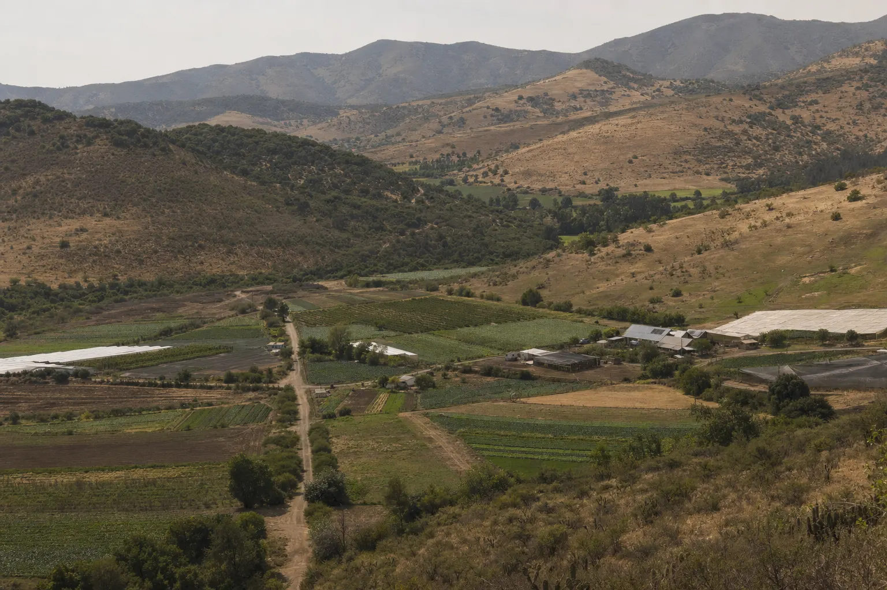

Antes de corregir o invertir, medir.
Diagnóstico técnico y acompañamiento en producción de hortalizas y flores —al aire libre, bajo cubierta o en hidroponía— basado en mediciones de terreno, no en supuestos.
Respuesta en el día · Visita a terreno en la Región de Valparaíso
¿Cuál es tu situación?
Tres puntos de partida distintos. Elige el que se parezca a lo que te está pasando hoy en el predio.
Plantas desuniformes, bajo calibre, síntomas que no cedan, agua que no alcanza. Medimos el sistema completo y encontramos la causa.
Diagnóstico Predial → 02 «Tengo suelo y agua, pero no sé cómo empezar.»Compraste o heredaste un terreno con potencial y ninguna experiencia agrícola. Definimos qué se puede producir ahí y en qué orden invertir.
Puesta en Marcha → 03 «Quiero decidir con datos, todas las temporadas.»Balance hídrico, programa de fertilización y control fitosanitario con seguimiento periódico.
Acompañamiento Continuo →Qué se mide
Datos duros tomados en tu predio, con procedimiento repetible. De ahí sale la conclusión, y no al revés.
Cuánta agua recibe realmente cada planta y qué porcentaje se está perdiendo.
Cómo se comporta el agua y la raíz en ese suelo específico.
Cuánta agua puede tomar el cultivo sin esfuerzo, y cada cuánto hay que reponerla.
Nivel de sales que la raíz está enfrentando.
Qué nutrientes están realmente disponibles.
Si el sistema hidráulico entrega lo que el diseño prometía.
Si se riega la cantidad correcta, con la frecuencia correcta.
Presencia, nivel y foco real del problema, con muestreo, no a ojo.
No todas las variables se miden en todos los predios. Se mide lo que corresponde al problema que trajiste.
El orden importa más que la receta
Escuchamos el problema
Medimos en terreno
Analizamos la evidencia
Entregamos un plan de ejecución
En ese caso se solicitan análisis específicos de laboratorio antes de recomendar. Preferimos pedir un análisis más que hacerte gastar en una solución equivocada.

Tres formas de trabajar juntos
Puedes contratar un diagnóstico puntual, ordenar un predio desde cero o dejar las decisiones técnicas de la temporada bajo seguimiento.
Diagnóstico Predial
Visita, mediciones e informe con plan de corrección.
Desde $180.000 Entrega en 7 días hábilesPuesta en Marcha
Plan maestro para terrenos sin historial productivo.
Desde $320.000 Incluye 2 visitasAcompañamiento Continuo
Balance hídrico, fertilización y seguimiento mensual.
Desde $220.000 / mes Plazo mínimo 3 mesesValores referenciales netos. Se ajustan según superficie, complejidad del sistema y distancia. Los análisis de laboratorio se cotizan aparte y se cobran a costo.
La desuniformidad del cultivo reproducía la desuniformidad del riego
Un cultivo de brócoli con plantas de tamaño muy desigual dentro del mismo sector. En el predio la hipótesis apuntaba a la fertilización. Se midió primero la uniformidad del sistema de riego y el problema no era nutricional: plantas vecinas estaban recibiendo láminas de riego distintas.
La lección: ajustar la fertilización sin haber medido el riego habría gastado dinero en el lugar equivocado.

Región de Valparaíso
- Viña del Mar
- Quillota
- La Cruz
- Limache
- Olmué
- Casablanca
- San Antonio
- Los Andes
- San Felipe
- Petorca
- Región Metropolitana a convenir
Fuera de esa zona, se evalúa según proyecto y se agrega costo de traslado.

Cuéntame qué está pasando en tu predio.
Describe el problema por WhatsApp y te digo si se resuelve con una evaluación en terreno o si necesitas algo distinto. Sin costo por esa conversación.